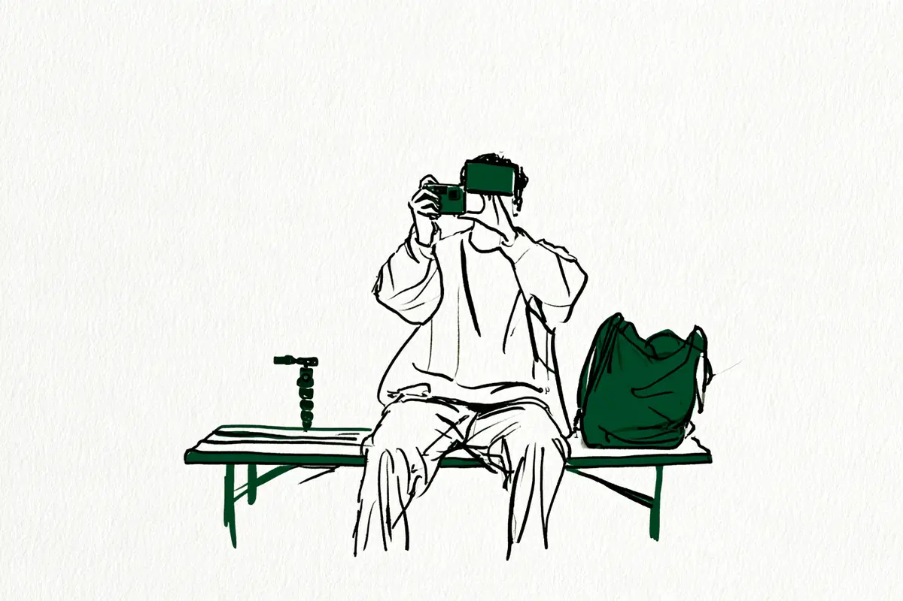

この記事には広告(アフィリエイトリンク)が含まれます。
現在地: 買う前に迷ってる
ニコン Z30の後悔・デメリット、買った人の不満と手放した理由

Z30を自分で買った・使っていると書いた60人の声を集めました。Z30にはのぞき窓(ファインダー。言葉の意味)がなく、公式の仕様に本体の手ブレ補正の記載がありません。
- 数えた60人の中に、Z30を買ったことを「後悔した」と書いた人は見つかりませんでした。ただし、このサイトの基準(使わなくなった等)に当たる人が2人、近い人が4人います
- 本体を手放した・替えた人は28人(売った・下取りに出したと書いた21人と、替えたとだけ書いた7人)。のぞき窓がないことを手放した直接の理由に挙げた人が7人、次の機種を選んだ理由に挙げた人が2人。残りはAF・出番が減った・キットのレンズ・機材の整理などで、7人は手放した理由を書いていないか、Z30以外の理由でした。一度買い戻してまた手放した人が1人います
- 不満はのぞき窓がない・日中に画面が見えない・手ブレ・AF・バッテリーなどに分かれ、どれが多いかは分け方で変わります(早見表)
- 手放した側の候補を先に全員読み、残りは途中で打ち切った集め方なので、割合としては読めません(数え方の偏り)
Z30は、ニコンが2022年8月5日に発売したミラーレス(言葉の意味)で、センサーはAPS-C(フルサイズより小さい規格。言葉の意味)。ニコンの表記は「Z30」で、書き手によっては「Z 30」とも書きます。2026年11月2日の時点で公式の製品一覧に載り、公式通販の4商品とも買い物かごに入れられる表示でした(公式の数字)。私はカメラを持っていないので、人の声を集めて整理する側で、買う・買わないはすすめません。
- まだ買う前で、後悔しないか知りたい → 早見表、「後悔」と書いた人、手放した・替えた人、ファインダーの節、公式の数字と値段
- 買ったばかりで、思ったように撮れない → 手ブレ補正の節、AF・バッテリー・そのほか
- 使っていて物足りなくなった → 手放すか迷っている人と、Z50IIが出てからの話
目次
- Z30のデメリット・不満の早見表: 種類、人数、その人がどうしたか
- Z30を買ったことを「後悔」と書いた人は見つからなかった: 題と中身が逆の記事と、使わなくなった人
- Z30を手放した・替えた28人: 行き先と理由を、人ごとに
- Z30のデメリット「ファインダーがない」: 11人の中身は日中の画面・望遠・のぞいて撮りたい
- Z30のデメリット「ボディ内手ブレ補正がない」: 公式はレンズ側の補正と動画の電子補正
- Z30のそのほかの声: AF、バッテリー、暗所、フルサイズとの比較、レンズ、大きさ、操作、中古の個体、充電
- Z30を書いた人の立場: 経験者と、最初の1台の人
- Z30に満足した人の声: 1台で広角から中望遠、最初の1台
- Z30の公式の数字と販売状況(2026年11月時点)
- 数え方と偏り
- Z30は買わない方がいい?読んだ範囲の答え
Z30のデメリット・不満の早見表: 種類、人数、その人がどうしたか
60人のうち不満を1つでも書いた人は46人で、本体・レンズ・使い方を同じ細かさ(1つの話題=1行)で分けました。私の読み方で、1人が2つ以上に入ります。右の列は、その行でいちばん多かった結果の人の例で、1人ずつの話です。人数は集め方の影響を受けます(数え方の偏り)。
表の中の言葉の意味
| 種類(私の読み方) | 書いた人数 | その人がどうしたか(例) |
|---|---|---|
| 本体 | ||
| ファインダーがない(のぞいて撮りたい・望遠で画面が暗転・あれば便利・気になる点。うち10人は手放した・替えた人) | 11人 | のぞき窓が物足りなくなった → Z50IIの発売を機に下取りに |
| 日中・炎天下・屋外の画面の見にくさ(うち4人はファインダーの行と重なる) | 7人 | 日中の画面 → Z50IIと使い分ける |
| 手ブレ(ボディ内手ブレ補正がない・動画の手ブレ・電子補正が効かない) | 10人 | 電子手ブレ補正が効かない → 使い続けている |
| AF・被写体検出・画像処理エンジン(1つ前の世代。起動・連写を含む) | 9人 | 被写体検出が物足りない → Z50IIへ替えて手放した |
| バッテリーの持ち(電源を切っても減る、を含む) | 5人 | 1日撮るなら3つ欲しい → 使い続けている |
| 暗い室内・暗所・高感度のざらつき | 4人 | 夕方以降の室内で光が足りない → α7C IIへ |
| フルサイズと比べた物足りなさ・フルサイズへ(画質・ボケ・大きいセンサーが欲しい) | 6人 | 物足りない → 別の機種を買うつもりで売った |
| ピントが眠い | 1人 | 腕の問題かも、と使い続けている |
| 重さ・大きさ(レンズが重かったせいもある、と本人・少しゴツい・大きく思える) | 3人 | 大きく思えて出しづらい → 旅行のときに使う |
| 操作・表示(画面の情報を消せない・設定の画面・PCでの表示・画面の明るさが手動・カードの位置・ボタンの押し心地) | 6人 | 画面の情報を消せない → 設定で消せると分かり使い続ける |
| 中古の個体の不具合(シャッターが渋くて切れない) | 1人 | 交換した個体も渋い → 使い続けている |
| 出番が減った・ほぼ使わない(別の機種や小さな機材に・旅行のときくらい) | 7人 | X100VIに出番を取られた → 下取りに |
| 中身の書かれていない不満(満足できない・失敗した) | 2人 | Vlog機として合わず → 買取に出してZ5へ |
| レンズ | ||
| キットのレンズ・レンズ(遠くの風景・換算75mmでは足りない・ボケ・画角・APS-C向けの本数) | 4人 | APS-C向けのレンズの本数 → Z5IIへ |
並びは人数順ではありません。行の分け方で順位が変わります(ファインダーと日中の画面の2行をまとめれば14人、手ブレとAFをまとめれば18人)。Z30の不満を書かずに手放した・替えた人(たよさんほか)が5人いて、表には入っていません(良い点も同様)。
60人の結果を、購入リンクの有無で分けて数えると、こうなります(判定の仕方は数え方の偏りに)。
| 結果(私の読み方) | 人数 | うち購入リンクがないと確かめられた書き手 |
|---|---|---|
| 満足 | 7人 | 6人 |
| 満足と不満の両方を書いて使い続けている | 16人 | 7人 |
| Z30の処遇を書かずに、別の機種を足した | 4人 | 4人 |
| 手放した・替えた | 28人 | 19人 |
| 手放す・替えることを考えている | 4人 | 4人 |
| 困りごとだけで、評価はない | 1人 | 1人 |
手放した・替えた28人は、売った・手放した・下取りに出したと書いた21人と、替えたとだけ書いた7人(次の節)。28人のうち1人は、一度手放したあと未使用品を買い戻し、半年後にまた手放しました。
Z30を買ったことを「後悔」と書いた人は見つからなかった: 題と中身が逆の記事と、使わなくなった人
「Z30 後悔」の検索では、海外の掲示板(Reddit)や動画の「後悔」も上に並びますが、書き手を確かめられないので数えていません。数えた60人のうち、自分のことに「後悔」の語を使った人は3人、後悔を否定した人は3人です。Z30を買ったことを「後悔した」と書いた人はいませんが、出番がなくなって手放した人はいます。
検索の上位にある「強烈に後悔した理由」という題の記事(カメラの紹介もしているサイトです)は、子どもの行事のための人(ダブルズームキット)のものです(2026年)。本文の後悔は「もっと早く買えばよかった」という向きで、落とし穴に挙げた充電器の記述は公式の記載と合わない部分があるので引きません(公式の数字)。発売前に予約した鎧井フサ子さんは、手に取ると大きく見えて予約を一瞬だけ後悔したが、握りが安定していてのぞき窓がなくても足りた、と(2023年)。Kentoさんの「本当にZ30を手放して後悔しないだろうか。」は、Z fcに替える前の迷いです(2026年)。否定した3人の「後悔」は、Z50IIへの買い替え・やめた下取り・縦に吊るための部品についてで、本体の購入ではありません(読んだ一覧)。
このサイトでは、後悔・使わなくなった・無駄だった、のどれかを本人が書いていれば後悔の側として数えます。当たるのは2人。komezouさんは、富士フイルムのX100VIを使い始めてレンズキットの出番がほぼなくなり、下取りに出しました(2025年)。もう1人は、知恵袋で売るかを相談した人です(2026年)。
z30は今ほぼ使ってません
近い人が4人(出番が減ったと書いて手放したNoom・ヨウヘイ・Daka-M Project・toruの各氏)で、中身は次の節に。数えなかった側の話は数え方の偏りに。
Z30を手放した・替えた28人: 行き先と理由を、人ごとに
本体を売った・手放した・下取りに出したと本文に書いた人は21人、別の機種に替えたとだけ書いた人は7人です。行き先は、ニコンの同じAPS-C規格の機種が9人(Z50II 7人・Z fc 2人)、ニコンのフルサイズが6人(Z5 3人・Zf・Z5II・Z6II)、他社が5人(キヤノンのR8・ソニーのα7C II・OM-5・ライカQ2・リコーのGR IIIx)、カメラ以外(アクションカメラのInsta360)が1人、Z30の代わりに買った機種を書いていない人が7人。手放した・替えた理由は1人ずつ違い、1つにはまとまりません。
のぞき窓がなくて、Z fc・Z50II・Z5IIへ替えた7人
Kentoさんは、重くなったZ6の代わりにZ30を買った人です(2026年)。
軽くて気軽に持ち歩けるので、旅行も散歩もほとんどZ30になり、気付けばZ6は出番が激減。
サッカーをする子どもを望遠で撮るとき、シャッターの瞬間に画面が暗転して相手がどこにいるか分からなくなることがあり、のぞき窓のある機種が欲しくなってZ fc(ニコンの表記はZfc)にしました。売ったとは書いていません。遠藤さん(カメラの紹介もしているサイトです)は、D5100から替えて16-50mmのキットを買った人です(2024年)。のぞき窓がないのは承知で買ったが、明るい屋外で画面が見えないのは思った以上だった、と。目の都合で体から離して構えるとブレる話は、本体の欠点ではなく自分の側の事情だと断ったうえで書き、連写とAFもやや不満に挙げて、Z50IIを買って下取りに出しました。その前の記事では、補正のないレンズと補正のない本体の組み合わせでブレた写真が少なくなかった、とも。n2hs31さんは、3年あまり使ってからZ50IIと入れ替えました(2026年)。
背面モニターだけで構図を確認するのが少しつらく感じる場面も増えてきます。
屋外では画面を見づらく感じた、とも。m310さん(カメラの紹介もしているサイトです)は、2026年1月に中古で買い、犬の撮影でキヤノンのR7を使わなくなるほど使った人です。炎天下で画面がよく見えないため、Z30の性能に不満はないと書いたうえで、Z fcに替え、Z30は下取りに(2026年)。替えた先の話はZ fcの記事に。じゅん@さん(カメラの紹介もしているサイトです)は、軽くて気に入っていたがのぞき窓がないのが物足りず、Z50IIの発売を機に下取りへ(2025年)。
satさんは、Z5が重くて最小のZ30を足した人です。スナップには最適だが、エンジンが1つ前の世代でAFと起動が違う、のぞき窓があれば便利な場面も多い、と書き、値上げの前にZ50IIにしました(2026年)。
尚、Z50IIの購入する際にZ30を手放したので、新品価格の半額程度で手に入れることができました。
2か月前の記事では色を調整する機能がZ30では限られることも次の機種を選ぶ条件に挙げています。ヨウヘイさんは、Z9のサブとして使い、小ささは気に入っていた人です(2025年)。
メインのZ9はそのままですが、サブ機のZ30を手放し、Z5IIを導入しました。
EVFが欲しい、APS-C向けのレンズが少ない、本体の手ブレ補正があればいい、の3つが気になって出番が減った、と書いています。
次の機種を選ぶときに、のぞき窓を挙げた2人
Noriyuki Aokiさん(カメラの紹介もしているサイトです)は、2022年に買ったZ30を2023年春に手放してZ5にしました。Z5を選んだ理由は、Z fcにないグリップとZ30にないのぞき窓と、より速いシャッターです。同じ年の7月に未使用品を買い戻しました。けれどZfが手元に来た2024年1月に、出番がなくなったと書いて、こう続けています。
紆余曲折あってZ30は手放しましたが、結局Zfだけが手元にあれば、今の幸福感は変わらないことが分かりました。
たよさんは、D700から初めてのZとしてZ30のキットを買い、2024年にZ5へ替えました。後押しはZfののぞき窓をのぞく機会があったことで、Z30の不満は書いていません。
手のサイズにもよると思うけど、僕の手にはZ30がドンピシャだった。
AFと暗い室内で、Z50II・Zf・α7C IIへ替えた3人
あこさん(カメラの紹介もしているサイトです)は、動画用に買ったZ30を写真用に残し、動画用はソニーに替えていた人です。2026年10月にZ30を手放してまでZ50IIにした理由は、被写体検出の物足りなさと、色の設定の機能と、軽さの3つでした。
それがZ30ではイマイチな印象だったんですよね。
1か月後の記事では、この買い替えに後悔はない、と。ysk1toさん(カメラの紹介もしているサイトです)は、子どもが生まれる前に12-28mmのキットを買い、満足度を60点と書いた人です(2025年)。本体の手ブレ補正がなく人に頼んで撮ってもらうとブレること、キットのボケが物足りず単焦点を足したことを書き、瞳AF(人の目に合わせるAF)の精度と操作感を理由にZfへ下取りに出しました。暗さに強い本体と、APS-C向けレンズの少なさも決め手でした。4か月あまり後には、こう振り返っています。
そう考えると、下取りに出してしまったZ30がサブ機としてちょうど良かったなと今更ながら思います。
写りの面で買い戻しはしない、と続きます。岩手県産おだんごさんは、リコーのGRIIIが買えずにZ30を買い、F1.7の単焦点(F値=レンズのひとみの開き具合。言葉の意味)を付けた人です。夕方以降の室内の明かりでは光が足りず、ブレるか暗く写る、と書き、AFも挙げてα7C IIへ(2025年)。
AF性能に関しても少し不満でした。
Z30の色は好きだった、と。
出番が減って手放した4人
toruさん(カメラの紹介もしているサイトです)は、Zfのサブでした(2025年)。
理由は、やはり立ち位置が中途半端になってしまっていたこと。
子連れでは邪魔になり、撮影が目的の外出には物足りなくてZfを選んでしまう。Zfに薄い26mmを付けると持ち出しやすくなって出番が落ちたこと、資金の都合も挙げて売りました。決め手はリコーのGR IIIxを買ったことで、室内や夜ではざらつきが目立つ、とも。Noomさんは、Z8の予備として迎えたZ30を2026年に売り、Insta360に替えました。
ずばり、愛用してたニコンのZ30をマップカメラに売りに出しました！
重い機材で体がつらく、日常の記録は手軽な機材の方が多かった、と。komezouさんはX100VIを使うようになって下取りに(上の節)。Daka-M Projectの書き手は、車の作業の記録をビデオで撮るために使っていました(2026年)。
DX（APS-C）機でビデオ撮影に使っていました。
ビデオだけだと使う回数が少ないことを理由に、マップカメラの買取に出してZ50IIにしました(もう1つの理由は、この記事では扱いません)。持ち出さなくなった人の声は軽くしても持ち歩かなかった人に。
キットのレンズ・画質・機材の整理・Vlog機として合わず、手放した4人
伊吹さん(カメラの紹介もしているサイトです)は、大きさも作りも気に入っていたが、2か月で手放しました(2026年)。
でもどうしても風景撮影の際の色表現が許容出来ませんでした。
16-50mmのキットで遠くの風景を撮ったときの話で、ほかに、換算75mmでは望遠が足りないこと、現像ソフトとの色の違い、暗い場所の動物を撮るα9で代わりが利くことを挙げています。白麦さんは、Z6のサブとして雑に使うつもりで買い、Z6を手放したあともZ30だけ残っていた人です(2026年)。
その後、Zfcを買おうと思ってZ30を売却しました。
画質にも不満があった(ほとんどキットのズームで、フルサイズと良い単焦点に比べると物足りない)、と。Z fcは買わず、のちZf。その後また買った話はカメラが続かない人の記事に。青木秀平さんは、外付けの光学の窓を付けて使い、写りに不満はないと書いた人です(2025年)。11月に富士フイルムのX-M5と役割がかぶり、解像感(細かい部分の写り)はZ30の方が良いとしたうえでZ30を手放しました。X-M5側の話はX-M5の記事に。Reijiro Kanekoさんは、Z5と迷った末にZ30を買い、2か月後にZ5の記事で「APS-CのZ30で失敗した」と書いた人です(2026年)。前後の記事は小説仕立てで、Vlog機として買ったが合わなくなった経緯を書き、買取に出したZ30の査定額でZ5を買っています。
重さ・電池・操作でOM-5へ替えた1人
ある船の話さんは、作品の撮影用に半年あまり使い、OM SYSTEMのOM-5に替えました(2023年)。
一番の問題は、重さだった。
重いのは、選んだレンズの重さも原因だと断り、電池の減り、ホワイトバランス(色の基準。言葉の意味)の設定画面、PCで中身を開くのが遅いことも挙げて、「文句たらたらだけど、Z30も素敵なカメラだと思う。」と結んでいます。売ったとは書いていません。重さの声は重さの記事に。
手放した理由を書いていない・Z30以外の理由の7人
理由を書いていない人が4人。naoさんは2年で13台を買って売り、12台目のZ30の次にキヤノンのR8へ乗り換えました(2025年)。
z30.本当に最高でした
ケイさんはZ50IIへの変更だけを書いています(2025年)。ニチフォトさんはZ30が最初のカメラで、その後ライカQ2へ乗り換えた遍歴だけです(2026年)。MINIMAL PHOTO BLOGの書き手(カメラの紹介もしているサイトです)は、ダブルズームキットを手放したあとに書いた記事で、気になる点に晴れた屋外での画面とAFの遅さを挙げ、手放した理由は書いていません(2024年)。
Z30以外の理由の人が3人。みかづきさんは、Z9とZfの3台目でした。
少し前まではZ30もあったけど手放した。
理由はこの記事では防湿庫(カメラを湿気から守る棚)に余裕がなくなったこと、翌年の記事ではAPS-Cが何となく嫌だったことで、2本で書き方が違います。げきやまさんは、愛機にしたいと書いた5か月後に、お金の都合でパソコンと一緒にいったん売りました(2026年)。U1さんは、D750の入れ替えにZ30を買ってすぐフルサイズを望むようになり、Z6IIを買っています(2026年)。
手放すか迷っている4人と、別の機種を足した4人、Z50IIが出てからの話
迷っている4人は知恵袋の質問者です。Vlog(日常を撮る動画)用に使っていた質問者は手ブレがひどいので売って小さな機材にするか(手ブレ補正の節)、ほぼ使っていない質問者は売ってX-M5にするか(上の節)。Z30でミラーレスを始めた質問者は、フルサイズ・本体の手ブレ補正・のぞき窓を求めてZ5かZ5IIかで迷い、Z30を手放すかは書いていません(2026年)。
Nikon Z30からZ5に変えようかなと検討しています。
売るといくらになるかを無料で知る方法は売るなら、まず無料で相場を知るに。
別の機種を足して、Z30の処遇を書いていない人が4人。himi_0528さんは「Z30では満足できなくなりました。」と書き、ソニーの色に惹かれてα7IVを買いました(2026年)。TOMOさんは、Z6II・Z fcと3台で使って手軽なZ30の出番が多かったが、被写体の認識が少なくAFが弱いと感じてα6700を足しました(2023年)。鎧井フサ子さんはZ30を持ちながらLUMIXのGX7MK3を買い(上の節)、ぽんさんは散歩用として割と満足と書いたうえで、より小さいX-M5を足しました(2025年)。
2024年12月に出た同じニコンのZ50IIへ替えた人は、28人のうち7人です(あこ・遠藤・sat・n2hs31・じゅん@・ケイ・Daka-M Project)。逆に、Z50IIの予備としてZ30を中古で買ったgoren3さん、Z50IIと迷った末にZ30を選んだnaokiho3615さんもいます(2026年)。よっさんのカメラブログの書き手(カメラの紹介もしているサイトです)はZ50IIを買えばZ30の出番はなくなると見込んでいたが、今も2台を使い分けている、と。どちらが合うかは読んだ声からは言えません。
Z30のデメリット「ファインダーがない」: 11人の中身は日中の画面・望遠・のぞいて撮りたい
Z30に、のぞき窓(ファインダー)はありません(ニコンの仕様ページにファインダーの項目がありません)。これを不満や気になる点に書いた人は11人で、うち10人は手放した・替えた人です(上の節)。中身は3つに分かれます。
日中に画面が見えにくい。 11人のうち4人(遠藤・m310・n2hs31・MINIMAL PHOTO BLOG)。のぞき窓には触れずに日中の画面だけを挙げた人がほかに3人います。よっさんのカメラブログの書き手(カメラの紹介もしているサイトです)は3年使ったデメリットの1つ目に、mossariwebの書き手(カメラの紹介もしているサイトです)はピントを手で合わせるときの話として、きんばらさんは祭りで画面が日光を反射して、と(2026年)。3人とも手放していません。
望遠で画面が暗転する。 Kentoさんの1人。
のぞいて撮りたい・あればよかった。 6人。Noriyuki Aoki・sat・ヨウヘイ・じゅん@の4人は上の節に。toruさんは、手放したあとのZ50の記事で「ファインダーを使いたいのでZ50でもよかったかも」と振り返り、Z5かZ5IIかで迷う知恵袋の質問者も、のぞき窓を求めています(迷っている人)。外付けの光学の窓をホットシュー(本体の上の取り付け口)に付けて補った人が1人(青木秀平さん。のちに機材の整理で手放しました)。
逆の声もあります。Takahiroさんは、最初の1台としてZ30を買った人です(2026年)。
最初のカメラなら、思った以上にファインダーがなくても問題ない。
Minato's memoの書き手は、のぞき窓を使って撮らないので要らない、と(2025年)。のぞき窓がないのは仕様で、日差しの下で撮るか、望遠で動くものを追うか、のぞいて撮りたいかで効き方が変わります。同じくのぞき窓のない富士フイルムの機種の声はX-M5の記事に。
Z30のデメリット「ボディ内手ブレ補正がない」: 公式はレンズ側の補正と動画の電子補正
仕様ページの手ブレ補正の欄は、レンズ内手ブレ補正が「レンズシフト方式（VRレンズ使用時）」で、動画の機能に「電子手ブレ補正」とあります。本体のセンサーを動かす補正の記載はありません。手ブレを不満や気になる点に書いた人は10人で、中身は動画の手ブレが6人、写真でのブレが2人(人に頼んだとき、補正のないレンズを付けたとき)、本体の補正が欲しいが2人です。手放した・替えた人のうち理由や不満に挙げたのは、ysk1to・遠藤・ヨウヘイの3人(上の節)。
ZV-E10(ソニー)から替えたAutomatic Monkeyの書き手は、18-140mmを選んだ人です(2022年)。
電子手ぶれ補正は全く使い物にならなかったです。
Vlog用に使った知恵袋の質問者は、売るかどうかの相談の中でこう書きました(2024年)。
ニコンに関しては画質はいいけど手ブレは悪すぎて、あと小型がやはりいいかと。
ペットを撮るときの手ブレで小さな機材を足すかを相談した質問者が1人(2023年)。西立 鉃男さんは、動画の手ブレ補正がアクションカメラより弱いのはつらいが、楽しく遊んでいる、と(2023年)。本体の補正がないことは、手放した・替えた3人の理由や不満に入っていて、動画の手ブレを書いた人は使い続けるか、知恵袋で相談しています。暗い場所で補正なしの機種がブレる仕組みはオートなのにブレるのはなぜ?に。
Z30のそのほかの声: AF、バッテリー、暗所、フルサイズとの比較、レンズ、大きさ、操作、中古の個体、充電
AF・画像処理エンジン。 9人。Z50II・Zf・α7C IIへ替えた5人(あこ・sat・遠藤・ysk1to・岩手県産おだんご)と手放したMINIMAL PHOTO BLOGの書き手は上の節、α6700を足したTOMOさんは迷っている人の節に。青木秀平さんは、広いエリアのAFが手前の物に合う癖を挙げ、自分の個体だけかもしれない、と添えています。しおしお日記の書き手(カメラの紹介もしているサイトです)は、ZV-E10から替えて1年の気になる点の1つ目に、子どもが横を向いたときの顔の認識を挙げています。
バッテリー。 5人。公式の静止画の撮影可能コマ数は約330コマで、仕様表の末尾に、業界の統一基準(CIPA)に準拠した値だとあります(公式の数字)。ある船の話さんは充電がすぐなくなる、と(上の節)。クロブチ STUDIOの書き手(カメラの紹介もしているサイトです)は、長くレフ機を使い、初のミラーレスがZ30だった人です。
ただ、Z30のバッテリーは容量も大きくないので一日撮影するなら正直３つは欲しいですね。
ほかの3人は購入リンクのあるサイトの書き手で、3時間ほどで280枚あたりで切れた体験、1か月使った最大の弱点、電源オフでも減ること(よっさんのカメラブログ)です。体験の枚数と公式の数字は条件が違うので比べられません。
暗い室内・暗所。 4人。岩手県産おだんご・ysk1to・toruの3人は上の節に。えびログの書き手は、Z6のサブとして使い、暗所は厳しいが主役でもいいのでは、と(2022年)。
フルサイズと比べて。 6人。白麦さん(画質)・みかづきさん(APS-Cが嫌)・U1さん(フルサイズを望んだ)は上の節、知恵袋の2人(Z5かZ5IIか・Z5へ)は迷っている人の節に。mossariwebの書き手(カメラの紹介もしているサイトです)は、14か月使って稼働率がいちばん高いとしたうえで、唯一の難点にフルサイズよりボケにくいことを挙げています(2023年)。
ピント。 鈴木ユートピアさん(カメラの紹介もしているサイトです)は、LUMIXとZ fcからZ30に落ち着き、Z30だけで写真集を作った人です(2025年)。
ピントが合ってなくて眠いというか、悪い意味でシャキッとしてないんですよね。
まだ腕が追いついていないせいかも、と添え、2026年10月もZ30で撮っています。Z fcを3日で手放した話はZ fcの記事に。
レンズ。 4人。伊吹さんの16-50mm、ysk1toさんのキットのボケ、ヨウヘイさんのAPS-C向けレンズの本数は上の節に。Gau-Gさん(カメラの紹介もしているサイトです)は、Z5IIのサブに26mmの薄い単焦点と組んで散歩に使い、この画角では画面に収まらないことが多い、と(2026年)。キットの16-50mmを良い側に書いた人は3人いますが、3人とも購入リンクのあるサイトの書き手です(読んだ一覧)。買い方は、キット21人(16-50mm・12-28mm・ダブルズーム)、本体と別のレンズ10人、分からない人29人。
重さ・大きさ。 3人。ある船の話さんは上の節に。かきまるさんは、最初の1台として買った人で、海外に出てみるとカメラが大きく思えて、取り出すのが少し気恥ずかしく、使うのは旅行のときだけになっている、と(2025年)。しおしお日記の書き手は、頑丈さはうれしいが少し重く大きい、と。公式の質量は約405g(バッテリー・カード込み)です。
操作・表示。 6人。カナオさんは、Zfを使う人で、画面の情報を全部消す表示がないと気づいた人です(2025年)。
ファインダーが無いのでモニター命の Z30 でこれは辛い。
設定で消せると分かり、手放さずに済んだ、と続きます。青木秀平さんも同じ表示の点、あこさんはカードとバッテリーが同じ場所で抜き差ししにくいこと、ある船の話さんは設定の画面、クロブチ STUDIOの書き手は画面の明るさが手動なこと、urouro.blogの書き手(カメラの紹介もしているサイトです)はボタンを押したときの音です。
中古の個体・充電。 goren3さんは、借りて比べてから買ったマップカメラの中古の個体はシャッターが渋くて動かず、交換になりました(2026年)。交換した個体も渋いと書きつつ、翌月にはスナップに最も向くと書いています。新品で買って故障したと書いた人は、この集め方では見つかりませんでした。中古で買った人はほかに3人(m310・Minato's memo・西立 鉃男)で、中古で買う人の声は中古の記事に。充電は、人事マンの書き手が充電器を落とし穴に挙げた1人で、公式の仕様には本体充電ACアダプター EH-7P(別売)の記載があり、製品の特長のページには、ポータブル充電器やパソコンにUSBでつないで給電しながら撮れる、とあります(公式の数字)。
Z30を書いた人の立場: 経験者と、最初の1台の人
経験者(上位機や他社機を併用、前に別のカメラを使った人)は44人。最初の1台と本文で確定できる人は3人(Takahiro・かきまる・ニチフォト)で、満足して使う人、旅行のときに使う人、理由を書かずにライカQ2へ乗り換えた人が1人ずつ。どちらとも分からない人が13人。手放した・替えた28人は、経験者22人・最初の1台1人・分からない人5人です(数え方の偏り)。
Z30に満足した人の声: 1台で広角から中望遠、最初の1台
満足と読んだ7人の内訳は、経験者3人、最初の1台1人、分からない人3人で、購入リンクのあるサイトの書き手が1人います。不満を1つでも書いた人は「両方」に入れたので、人数は分け方で変わります。本文に出したのは購入リンクのない4人で、残りは読んだ一覧に。
卓球の動画用に買って自転車にも持ち出すIndigoさんは、Z6IIとGRIIIも使う人です(2026年)。
GRⅢのコンパクトさも良いんですが、Z30は広角から中望遠まで1台で対応できて助かるのです。
Takahiroさんは、家族のZ50IIとレンズが重ならないよう12-28mmのキットを選んだ人です。
私の初めてのカメラはZ30だった。
Z8の2台目をZfから替えたnaokiho3615さんは、店で触って軽さに驚き、深い握りも気に入った、と(2026年)。野球を撮る知恵袋の質問者は、D750と並べて使い始めて1か月で気に入っている、と書いています(2023年)。
Z30の公式の数字と販売状況(2026年11月時点)
声に出た不満を、ニコンの公式ページの数字と並べました。仕様ページ・製品ページ・製品一覧・公式通販のニコンダイレクトから、2026年11月2日に取得した値です。
| 項目 | 公式の記載 |
|---|---|
| 発売 | 2022年8月5日 |
| 質量 | 約405g(バッテリーとメモリーカードを含む、ボディーキャップを除く)。本体のみ約350g |
| 撮影可能コマ数(静止画) | 約330コマ。仕様表の末尾に、特に記載のない限り業界の統一基準(CIPA)の規格か指針に沿った値、とあります |
| 手ブレ補正 | レンズ内手ブレ補正: レンズシフト方式(VRレンズ使用時)。動画に電子手ブレ補正。ボディ内(センサーを動かす)補正の記載なし |
| ファインダー | 仕様表に項目なし。製品ページにも記載なし |
| 充電 | 本体充電ACアダプター EH-7P(別売)。製品の特長に、USBでつないで給電しながら撮影できる、とあります。通販の付属品の欄に、バッテリーチャージャー MH-32は付属しない、とあります |
| 防塵防滴 | 本体の記載なし(不満に書いた人は、この集め方では見つかりませんでした) |
| センサー | APS-C(DXフォーマット)、有効2088万画素 |
| 背面モニター | バリアングル式(横に開いて回る方式)の3.0型、約104万ドットのタッチパネル |
| 端子 | 外部マイク入力(3.5mm)、HDMI(Type D)。ヘッドホン端子の項目なし |
| 現行の構成 | ボディ、16-50 VR レンズキット、12-28 PZ VR レンズキット、ダブルズームキット。製品一覧のミラーレスカメラに掲載 |
| 公式通販の価格(税込、取得日時点) | ボディ97,900円、16-50 VR レンズキット119,900円、12-28 PZ VR レンズキット143,000円、ダブルズームキット150,700円 |
同じ日のニコンダイレクトの表示では、4商品とも「買い物かごに入れる」のボタンがあり、在庫や納期の文言は商品ページにありませんでした。質量の読み方は重さの記事に。仕様は変わるので、表の数字も自分で仕様ページで確かめてください。
手放した・迷った人の理由は、のぞき窓がない、日中に画面が見えない、AFと画像処理エンジン、暗い室内、キットのレンズ、出番が減った、機材の整理、重さと電池、それに売って小さな機材にするか・フルサイズにするか、でした。楽天市場の検索リンクを1つ置きます。置く条件は、購入リンクのない本人の体験が2人以上あり、不満の側の声があることで、Z30は購入リンクがないと確かめられた本人が41人、うち不満の側(満足以外の結果の人)が35人なので当てはまりました。私のおすすめではなく、いまの値段や在庫を確かめるためのリンクで、在庫と価格は日ごとに変わります。Z50II・Z fc・Z5・Zfは別の機種なので検索語に含めていません。下のリンクは『Nikon Z30』の名前で楽天市場を検索します。
数え方と偏り
数えたのは、自分でZ30を買った、または使っていると書いた60人です。内訳はnote41人・個人ブログ13人、知恵袋6人(全員が質問者)。Z fc・Z50・Z50II・Z5・Zfの人は数えず、この機種から替えた人・へ替えた人は数えています。家族の機体・借りただけ・返品した人・検討しただけの人と、同じ型番のゴルフ用の距離計やイヤホンの記事は数えていません。分け方は私の読み方です。
今回は人数の上限を60人にして、手放した・替えた・手放しを考えた側の候補を先に全員読み、残りは満足側をnoteの機械的な順と検索の上位から足して打ち切りました。題や所有の語の近くに手放した・替えたと書いていない本人30人以上(購入の報告・作例が中心で、全文は読んでいません)は、上限のため数えませんでした。その中には、ほとんど使わないと書いた人も、選んで正解だったと書いた人もいます。だから60人の中の手放した側は実際より多く見えている可能性があり、後悔・不満・最初の1台の人数も割合としては読めません。見つけた候補は全員読みました。ただ、Z50II・Zfなど次の機種の名前からは探していないので、手放した人はまだいる可能性があります。
偏りは、ほかに4つあります。
- 探した語の偏り。「後悔」「デメリット」「手放した」「売った」「買い替え」「乗り換え」「下取り」などの語で探しました(Googleは19ページ、noteは57語、知恵袋は37語)。手放した・替えた28人のうち題で見つかったのは8人で、残る20人は次の機種・遍歴・機材の整理の記事の中にいました。手放した側を先に全員読んだので、手放した人の数はほかの機種の記事と比べられる数ではありません
- 「後悔」の語で検索すると、照合できないReddit・動画と、レンタル会社や販売店のページが上に並びます(2026年11月2日、私の検索で)。1ページ目に出る本人4人のうち3人は購入リンクのあるサイトの書き手で、手放したのは1人です
- 購入リンクか広告の表記があるサイトの書き手19人には「(カメラの紹介もしているサイトです)」と添えています。本文に商品リンクや広告の表記があるかを保存したページで機械的に確かめ、はてなやnoteが自動で付けるタグとAmazonの共有リンクだけの人は「なし」に、同じ書き手の別の記事にある人は「あり」にしました。短縮リンクは開いていません
- 経験者が44人います。声の年は2022年8月〜2026年10月で、2024年12月にZ50IIが出てからの記事に手放した側が偏ります。noteの書き手は引いた記事より後の記事も読みましたが、個人ブログの書き手の続きの記事は一部しか読んでいません
数えなかったのは、本人の購入体験が本文にない選び方・比較・一般論の記事(名前は読んだ一覧に)と伝聞、販売店・レンタル・買取店・メディアのページ、販売の今後についての噂、照合できないReddit・YouTube・X、それに価格.comの掲示板とレビュー(規約が私的・非営利目的に限るため、引用せず人数にも入れていません)です。同じ書き手の複数の記事は1人として数えています。
Z30は買わない方がいい?読んだ範囲の答え
買わない方がいい、とも、買った方がいい、とも、読んだ声からは言えません。同じ機種に、画面だけで構図を決めるのがつらくなってZ50IIへ移った人と、最初の1台ならのぞき窓なしでも困らないと書いて使い続ける人がいます。動画の手ブレがひどいので売るかを相談した人と、補正は弱いが楽しく遊んでいると書く人も、同じ仕様を別の形で書いています。
読んだ声にあった形は4つです。のぞいて撮りたくなって、同じニコンののぞき窓のある機種へ替えた人。別の機種や小さな機材に出番を取られて手放した人。設定で表示を消すなどして使い続けた人(カナオさん)。Z fc・Z30・Z50を借りて比べてから決めた人(店頭で触る)。ここに書いたことは読んだ声の整理で、公式の数字は上の表から自分の目で確かめてください。買う前の順番は初めてのカメラ、最初の一台は何で決めた?に。
ほかの機種の声と、買う前の確認
次に読むなら
この記事で読んだ129件
体験談120件(60人の出典。note 97件、個人ブログ17件、知恵袋6件)、数えなかったnote・ブログ、公式ページ9件に分けています。本文で使わなかったものには注記しました。
体験談97件(note 41人の出典)
- note(toru)「Nikon Z30を手放すことになったので、思い出を振り返る。」(経験者、立ち位置が中途半端・子連れでは邪魔・撮影メインでは物足りない・Zfに出番を取られた・室内や夜のノイズ、手放した、GR IIIx(売却、資金調達も)、2025年。カメラの紹介あり)
- note(toru)「初カメラ、サブカメラにNikon Z50(中古)は最良の選択かも」(同じ人、2025年。カメラの紹介あり)
- note(toru)「次買うべきカメラはGR3かGR3Xか？考えてみた。」(同じ人、2025年。本文では使っていません。カメラの紹介あり)
- note(toru)「GR3x欲しいってnoteを書いたら、たった5日後に手に入れてしまった話。」(同じ人、行き先のGR IIIxを購入、2025年。カメラの紹介あり)
- note(あこ)「ニコンのZ5ⅡCが話題ですがZ30からZ50Ⅱへ買い替えました。理由は3つ「エンジン・フレピク・軽さ」」(被写体検出がイマイチ・SDとバッテリーが同じ場所、替えた先はZ50II(動画用は2026/3にZV-E10 IIへ)、2026年。カメラの紹介あり)
- note(あこ)「ニコンZ30からZ50Ⅱに買い替えて1ヶ月。24-120 4/fとの組み合わせがわたしの最適解」(同じ人、2026年。カメラの紹介あり)
- note(あこ)「noteはじめます｜カメラをニコンZ30からソニーZV-E10 IIにかえた話」(同じ人、2026年。本文では使っていません。カメラの紹介あり)
- note(白麦)「高性能なカメラに疲れて、Nikon Zfをスナップ機にした話」(経験者、画質に物足りなさ(フルサイズ比)、手放した(Z fcのつもりで売却、のちZf)、2026年)
- note(Kento｜カメラとぼくとときどき旅行)「Nikon Z fcを購入しました。」(経験者、ファインダーがない(望遠でブラックアウト)、替えた先はZ fc、2026年)
- note(Kento｜カメラとぼくとときどき旅行)「はじめてのnote」(同じ人、2026年。本文では使っていません)
- note(青木秀平)「【機材】 Nikon Z30を3ヶ月使って」(経験者、AFが手前に合う・表示を消せない、手放した(X-M5と役割が被り整理)、2025年)
- note(青木秀平)「機材を整理しました。」(同じ人、2025年)
- note(青木秀平)「FUJIFILM X-M5とNikon Z30を比べて。」(同じ人、2025年。本文では使っていません)
- note(Noriyuki Aoki(Ph.D))「1度手放したZ30ですが未使用品(約79,000円)を見つけたのでポチりまし…」(経験者、ファインダー・グリップ(Z5を選んだ理由)→2回目はZfで出番なし、替えた先はZ5(2023春)→2023/7に買い戻し→2024/1にまた手放した(Zfで出番なし)、2023年。カメラの紹介あり)
- note(Noriyuki Aoki(Ph.D))「個人的2023年に買って良かったもの10選」(同じ人、2023年。本文では使っていません。カメラの紹介あり)
- note(Noriyuki Aoki(Ph.D))「個人的2022年に買って良かったもの10選」(同じ人、2022年。本文では使っていません。カメラの紹介あり)
- note(Noriyuki Aoki(Ph.D))「Nikon Z8用のパワーバッテリーパックって以前からこんな価格でしたっけ？…」(同じ人、Zfで出番がなくなったZ30と入れ替え、2024年。本文では使っていません。カメラの紹介あり)
- note(Noriyuki Aoki(Ph.D))「紆余曲折あってZ30は手放しましたが、結局Zfだけが手元にあれば、今の幸福感…」(同じ人、2024年1月にまた手放した、2024年。カメラの紹介あり)
- note(セキュリティ系行政書士の遠藤さん)「Nikon Z50IIに変えた、という話」(経験者、ファインダーがない(屋外で液晶が見えない)・連写・AF・本体に手ブレ補正がなくブレた(続きの記事)、替えた先はZ50II(下取り)、2024年。カメラの紹介あり)
- note(セキュリティ系行政書士の遠藤さん)「カメラが楽しいという話」(同じ人、2024年。本文では使っていません。カメラの紹介あり)
- note(セキュリティ系行政書士の遠藤さん)「トラベルレンズは日常使いにも便利、という話」(同じ人、補正のないレンズと本体でブレた写真、2024年。カメラの紹介あり)
- note(sat)「価格改定前にZ50Ⅱを購入しました」(経験者、エンジン1世代前・ファインダーがあれば・色味を調整する機能は限定的、替えた先はZ50II、2026年)
- note(sat)「私のカメラ遍歴～ミラーレスカメラ編～」(同じ人、2025年。本文では使っていません)
- note(sat)「自分に合うサブ機を探している話」(同じ人、色味を調整する機能は限定的、2026年)
- note(伊吹)「Z30を2ヶ月で手放しました」(経験者、キットレンズが遠景の風景に合わない、手放した(2か月)、2026年。カメラの紹介あり)
- note(伊吹)「Z30ファーストインプレッション」(同じ人、2026年。本文では使っていません。カメラの紹介あり)
- note(伊吹)「TAMRON 25-200mm F/2.8-5.6 Di III VXD G2 (Model A075) ファーストインプレッション」(同じ人、2026年。本文では使っていません。カメラの紹介あり)
- note(Noom（初老と言われても、まだ道の途中）Nommy)「NikonZ30を売ってInsta360を買った。時代と日常の撮影が変わる。」(経験者、出番が減った、手放した(マップカメラで売却→Insta360)、2026年)
- note(Noom（初老と言われても、まだ道の途中）Nommy)「単焦点レンズの面白さ」(同じ人、2025年。本文では使っていません)
- note(ある船の話『そして愛だけが残った』)「NikonのZ30に別れを告げ、OLYMPUSのOM-5と暮らすことにした日に思うこと。」(重さ・電池・メニュー・PC表示、替えた先はOM-5、2023年)
- note(ysk1to)「Z30からZfへ」(経験者、瞳AF・ボディ内手ブレ補正なし・キットのボケ・高感度(暗所)・APS-C用レンズの少なさ、替えた先はZf(下取り。のち「サブにちょうど良かった」が写りで買い戻さない)、2025年。カメラの紹介あり)
- note(ysk1to)「子どもを撮るために買ったNikon Z30」(同じ人、2025年。カメラの紹介あり)
- note(ysk1to)「レンズ沼が枯れたZレンズ2本」(同じ人、2025年。カメラの紹介あり)
- note(n2hs31)「#1 Z30からZ50IIに入れ替えたというお話」(ファインダーがない・屋外で画面が見づらい、替えた先はZ50II(3年強)、2026年)
- note(m310（旧サンイチマル）)「Nikon Zfcを購入してしまった | 写真で残したい | 撮影機材について」(経験者、炎天下で液晶が見えない、替えた先はZ fc(下取り)、2026年。カメラの紹介あり)
- note(m310（旧サンイチマル）)「ブラックアウトの憂鬱 | 写真で残したい | 撮影機材について」(同じ人、2026年。本文では使っていません。カメラの紹介あり)
- note(m310（旧サンイチマル）)「Canon EOS R7の出番が減ってきた | 写真で残したい | 撮影機材について」(同じ人、2026年。本文では使っていません。カメラの紹介あり)
- note(nao)「そしてCanonへ、、、」(経験者、本当に最高でした、替えた先はCanon R8、2025年)
- note(nao)「2年で13台。カメラを買って売って、また買って──気づけば沼の底にいました」(同じ人、2025年。本文では使っていません)
- note(Reijiro Kaneko)「Z5購入の後ろ盾」(経験者、Vlog機のつもりが合わなかった(小説仕立て)・「Z30で失敗した」、替えた先はZ5(買取に出した)、2026年)
- note(Reijiro Kaneko)「初夏の穴子さん」(同じ人、買取に出したZ30の査定額でZ5を購入、2026年)
- note(Reijiro Kaneko)「シングル・アゲイン」(同じ人、小説仕立て、Vlog機として買ったが合わなくなった経緯、2026年)
- note(Reijiro Kaneko)「本気でオンリーユー」(同じ人、小説仕立て、2026年。本文では使っていません)
- note(Reijiro Kaneko)「Z30購入四方山話（前編）」(同じ人、Z5と迷った末にZ30を購入、2026年。本文では使っていません)
- note(Reijiro Kaneko)「Z30購入四方山話（後編）」(同じ人、2026年。本文では使っていません)
- note(Reijiro Kaneko)「喧嘩をやめて」(同じ人、2026年。本文では使っていません)
- note(Reijiro Kaneko)「もはやロマンス詐欺」(同じ人、2026年。本文では使っていません)
- note(みかづき)「Hasselblad X2Dを買った話」(経験者、防湿庫が手狭/APS-Cは何となく嫌、手放した(のちGFX100RF)、2024年)
- note(みかづき)「淡路島旅行」(同じ人、2025年)
- note(みかづき)「コンパクトだけどコンパクトじゃないGFX100RF」(同じ人、2025年。本文では使っていません)
- note(みかづき)「みえてきたZ9とZ fの使い分け」(同じ人、2024年。本文では使っていません)
- note(ヨウヘイ)「新顔（Z5II導入）」(経験者、EVF・APS-Cのレンズ・ボディ内手ブレ補正→出番減、替えた先はZ5II、2025年)
- note(ヨウヘイ)「布陣（カメラライフ2023年）」(同じ人、2023年。本文では使っていません)
- note(げきやま)「最低限、最小限で行こう。 - Nikon Z30」(経験者、お金の都合で一旦売却、手放し、2025年。本文では使っていません)
- note(げきやま)「ちょうどいいレンズ。 - Nikkor Z DX 24mm f/1.7」(同じ人、2026年)
- note(げきやま)「2026年の始まり。」(同じ人、2026年。本文では使っていません)
- note(げきやま)「近況。」(同じ人、2026年)
- note(岩手県産おだんご)「あっという間にα7C2を買っちゃった話｜作例も少し」(暗い室内・AF、替えた先はα7C II(売却済み)、2025年)
- note(岩手県産おだんご)「GRIIIが買えなくてZ30を買った話｜Z30が好きになりました」(同じ人、2024年)
- note(U1 （ぴぴぽぽの飼い主）)「家で遊ぶオカメインコの撮影始めました」(経験者、フルサイズが欲しくなった、替えた先はZ6II、2026年)
- note(komezou)「NIKON Z レンズの旅用ズームレンズは？ 24-120？ 24-200？」(経験者、X100VIでほぼ使わなくなった、手放した(下取り)、2025年)
- note(komezou)「NIKKOR Z 24-120mm f/4 S 購入決定！」(同じ人、2025年。本文では使っていません)
- note(じゅん@)「私の旅カメラ NikonZ50II + NikkorZ DX18-140mm f/3.5-6.3 VR」(経験者、ファインダーがない、替えた先はZ50II(下取り)、2025年。カメラの紹介あり)
- note(ケイ@経過観察中)「Nikon Z8 を買った話」(経験者、理由の記述なし、替えた先はZ50II、2025年。本文では使っていません)
- note(ケイ@経過観察中)「2025年を振り返ろう, 上半期」(同じ人、2025年)
- note(ニチフォト)「元フルサイズユーザーがAPS-Cに移行し、その後マイクロフォーサーズに移行した話」(最初の1台、理由の記述なし、替えた先はライカQ2、2026年)
- note(himi_0528)「ひっさびさの投稿」(経験者、満足できなくなった(SONYの色)、買い足し(α7IV)、2026年)
- note(たよ)「Z3を待つと言ったな、あれは嘘だ。/ Z5レビュー」(経験者、ZfのEVFが後押し、替えた先はZ5、2024年)
- note(たよ)「スナップが好き。」(同じ人、2023年。本文では使っていません)
- note(TOMO)「α6700でソニーデビューしました」(経験者、AF・被写体認識、買い足し(α6700)、2023年)
- note(naokiho3615/趣味フォト)「カメラ遍(沼)歴の紹介」(経験者、満足(Zfから乗り換えたサブ)、2026年。本文では使っていません)
- note(naokiho3615/趣味フォト)「サブ機をZfからZ30に乗り換えた理由(前半)」(同じ人、2026年)
- note(naokiho3615/趣味フォト)「サブ機をZfからZ30に乗り換えた理由(後半)」(同じ人、店で触って軽さに驚き深いグリップ、2026年)
- note(goren3)「Z30シャッターが切れない事件の事の顛末」(経験者、中古の初期不良、両方(レンタルで試してから購入)、2026年)
- note(goren3)「Z30やはりシャッターが渋い」(同じ人、交換した個体も渋い、2026年)
- note(goren3)「Z30＋DX24F1.7 最強スナップ機」(同じ人、2026年)
- note(goren3)「Z30レンタルしました」(同じ人、2026年。本文では使っていません)
- note(goren3)「Z30の憂鬱」(同じ人、2026年。本文では使っていません)
- note(カナオ)「ニコンZ30の使いこなし｜カメラを縦に吊ってみる」(経験者、背面モニターの情報表示(設定で解決)、両方、2025年。本文では使っていません)
- note(カナオ)「ニコンZ30の使いこなし｜背面モニターに関して気づいたこと」(同じ人、2025年)
- note(Indigo)「ようこそNikon Z30」(経験者、満足、2026年。本文では使っていません)
- note(Indigo)「チームライドで北摂へ」(同じ人、2026年)
- note(Takahiro)「話題のZ5IIC、カメラ初心者の自分ならどう思う？｜カメラ初心者日記 Vol.23」(最初の1台、満足、2026年)
- note(Takahiro)「一眼カメラ始めました。｜カメラ初心者日記 Vol.1」(同じ人、2026年)
- note(Gau-G)「じじいのスナップの話」(経験者、Z26mmの画角(レンズ)、両方、2026年。カメラの紹介あり)
- note(Gau-G)「じじいの散歩の話」(同じ人、2026年。本文では使っていません。カメラの紹介あり)
- note(Gau-G)「じじいの散歩カメラの話」(同じ人、2026年。本文では使っていません。カメラの紹介あり)
- note(ぽん)「FUJIFILM X-M5 買いました」(経験者、割と満足、買い足し(X-M5)、2025年)
- note(ぽん)「気軽にNikon 〜Nikon Z30のススメ〜」(同じ人、2025年。本文では使っていません)
- note(かきまる)「ミラーレスカメラで撮ってみた1年」(最初の1台、大きく感じて取り出しにくく、旅行の時くらいしか使えていない、両方、2025年)
- note(西立 鉃男のエンディングノート)「道具のおはなし（カメラ編その２）」(経験者、動画の手ぶれ補正が弱い、両方(中古)、2023年)
- note(きんばら)「祭りの臨場感を画に収めたい～中畑八幡社おまんと祭りでリベンジのつもりも…～」(モニターが太陽光で見えない、両方、2026年)
- note(すど)「初投稿じゃないけど改めましての自己紹介 Ver.2026」(満足、2026年。本文では使っていません)
- note(鈴木ユートピア | 文学フリマ東京 す-79)「写真がこんなに上手くなったよ！ | 僕とカメラ | note」(経験者、ピントが眠い(使いこなせていないだけかも)、両方(S5IIX・Z fcから)、2025年。カメラの紹介あり)
- note(鈴木ユートピア | 文学フリマ東京 す-79)「【手に馴染む...】Z30を購入しました！」(同じ人、2024年。本文では使っていません。カメラの紹介あり)
- note(鎧井フサ子)「カメラ遍歴をちょこっと（後）」(経験者、予約を一瞬後悔→充分、買い足し(GX7MK3を買い足し、2023/4)、2023年)
- note(鎧井フサ子)「古河桃まつり（LUMIX編）」(同じ人、Z30を持ちながらGX7MK3を購入、2023年)
体験談17件(個人ブログ13人の出典)
- Daka-M Project「NIKON Z30を手放してZ50IIを導入した件: Daka-M Project」(経験者、使用頻度が少ない、替えた先はZ50II(マップカメラで買取)、2026年)
- MINIMAL PHOTO BLOG「小さくても本格派｜Nikon Z30レビュー | MINIMAL PHOTO BLOG」(屋外晴天下で画面が見えづらい・AFがやや遅い(気になる点。手放した理由の記述なし)、手放し、2024年。カメラの紹介あり)
- urouro.blog「Z30を下取りに出せなかった理由。 | urouro.blog」(経験者、ボタンの押し心地・EVF非搭載が最大のネック(別記事)、両方(Z9の金策の下取りをやめた)。本文では使っていません。カメラの紹介あり)
- urouro.blog「道具感ベースで、なるべく冷静にNikon Z30実践投入後の感想を書こう。[Myカメラ沼15台目]」(同じ人。カメラの紹介あり)
- urouro.blog「Zfc BlackとZ30の外観比較。デザインだけじゃない違いすぎる使用感について！ | urouro.blog」(同じ人、EVF非搭載が最大のネック、本文では人数に入れただけです。カメラの紹介あり)
- 人事マン、適応障害で休職し、復職する「Nikon「Z30ダブルズームキット」を買って強烈に後悔した理由 | 人事マン、適応障害で休職し、復職する」(ダブルズームキット、満足、本文の「後悔」はもっと早く買えばよかったという向き、2026年。充電器の記述は公式と合わないので不満に数えていません。カメラの紹介あり)
- 35mmの奇跡「Nikon Z30を1ヶ月使って分かった良いところと悪いところ | 35mmの奇跡」(経験者、バッテリー・ボディ内手ぶれ補正なし、両方。カメラの紹介あり)
- あなたの趣味は何キロですか？「Nikon Z30は普段使いの最適解かも【実写レビュー】」(経験者、バッテリー、両方。カメラの紹介あり)
- しおしお日記「【子育て】ニコン Z 30はどんなカメラか【初心者】 | しおしお日記」(経験者、動画で手ブレ補正が効きにくい・AF・少しゴツい、両方(ZV-E10→Z30)。カメラの紹介あり)
- mossariweb「動画だけじゃない！ Nikon Z30 14ヶ月の使用レビュー」(経験者、望遠の手持ちが安定しない・ボケにくい・明るい場所で液晶が見えない(別記事)、両方、2023年。カメラの紹介あり)
- mossariweb「Nikon Zfcをポチってしまった」(同じ人、2023年。カメラの紹介あり)
- えびログ「Z30をオススメする話 - えびログ」(経験者、暗所、両方、2022年)
- Minato's memo「Nikon Z30を買いました - Minato's memo」(満足、2025年)
- Automatic Monkey「ソニーのZV-E10からニコンのZ30に乗り換えました - Automatic Monkey」(経験者、電子手ぶれ補正、両方(ZV-E10→Z30)、2022年)
- クロブチ STUDIO「NikonZ30レビュー！小さいけど写りは凄いぞ｜クロブチ STUDIO」(経験者、液晶の明るさ手動・バッテリー、両方。カメラの紹介あり)
- よっさんのカメラブログ「ニコン Z30 レビュー｜3年使った評価と正直なデメリット【作例あり】 | よっさんのカメラブログ」(経験者、日中の画面・電源OFFでもバッテリー減、両方(Z50IIと2台持ち)。カメラの紹介あり)
- よっさんのカメラブログ「Z50ⅡとZ30を両方使う私が本音で比較！どっちを買うべき？【Zfcとの違いも】」(同じ人。カメラの紹介あり)
体験談6件(知恵袋6人の出典。題は質問の1文目、または句点のない見出し行)
- 「ニコンのZ30をvlogカメラで使ってたのですが、思い切って売却してosmo pocketとかgo proもしくはiPhoneの方がいいでしょうか？」(動画の手ブレ・小型の方が、検討(売ってOsmo Pocket等か)、2024年)
- 「今Nikon Z30ダブルズーム, z6初代, 28mmf2.8, 50mmf1.8sを持っていて」(経験者、ほぼ使っていない、検討(売ってX-M5か)、2026年)
- 「ニコンのZ5かZ5iiで迷ってます。」(フルサイズ・IBIS・ファインダーを求めて、検討(Z5かZ5IIか)、2026年)
- 「Nikon Z30からZ5に変えようかなと検討しています。」(フルサイズの35mm Sを使いたい、Z5へ替えるか検討、2024年)
- 「z30を使用しているのですが、手ぶれがあり」(手ぶれ(ペット)、困り、2023年)
- 「長文になります。」(経験者、ベタ惚れ、満足、2023年)
数えなかったnote・ブログ(本人の購入体験が本文にない、またはZ30を買っていないもの。名前のみ)
- note: ma_ko(比較・選び方の記事で、本人の購入の記述が本文にない)、カメラマン養成講座・らいと・KOU・katy.shot・ごう・永遠丸・かめんさん・jaguar・芥川龍一・あかうさ・平乃ひら・fiftyboy・Alice_photolog・ほびマガ・Nikonと写真の日々・下司智津惠・思い出デジカメ・CAMERA DAYS(選び方・比較・一般論・紹介で、本人の購入・所有の記述を本文で確かめられなかった)、すもぶー・tomomi.・さかずき・かわこ・ﾊﾅﾏﾙ子・SuzukenSambar・Swan High 1114・きゃみ・いくみ・F.G_Photographer・夢望庵・つぶあんしかかたん・北の写真館・たけしま・おさないたかお(検討だけ・触っただけ・別の機種を選んだ)、maa(借りただけ)、ミラーボールちくわ(家族の機体)、8o3・ツナかん(購入の報告だけ)
- ブログ: LOGDEMO・ガジェログ・sincereentertainment・yb-taro・jimatube・家電ラボ(一般論・紹介)、四季の移ろい・国境なき母さん放浪記(買っていない・家族の機体)。パンダスタジオ・みんなのカメラ・月刊カメラマン・デジカメWatch・マップカメラ・キタムラなどの事業者・メディアと、価格.com・Reddit・YouTube・Xは数えていません。購入の報告・作例が中心で人数に入れなかった本人は、noteを含めて30人以上います
公式ページ9件
- ニコン Z30 仕様(質量・撮影可能コマ数・手ブレ補正・モニター・端子・充電。2026年11月2日取得)
- ニコン Z30 製品ページ(発売日・キット構成。2026年11月2日取得)
- ニコン Z30 特長(動画)(USB接続で給電しながら撮影。2026年11月2日取得)
- ニコン ミラーレスカメラ製品一覧(Z30の掲載。2026年11月2日取得)
- ニコンダイレクト APS-Cサイズ一覧(Z30の4商品。2026年11月2日取得)
- ニコンダイレクト Z30 ボディ(税込97,900円、買い物かごに入れる。2026年11月2日取得)
- ニコンダイレクト Z30 16-50 VR レンズキット(税込119,900円。2026年11月2日取得)
- ニコンダイレクト Z30 12-28 PZ VR レンズキット(税込143,000円。2026年11月2日取得)
- ニコンダイレクト Z30 ダブルズームキット(税込150,700円。2026年11月2日取得)
引用は2026-11-02時点で各ページを閲覧して確認しました。